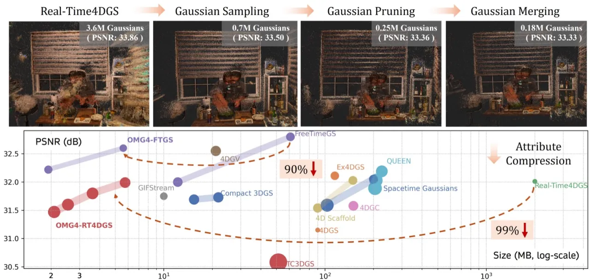
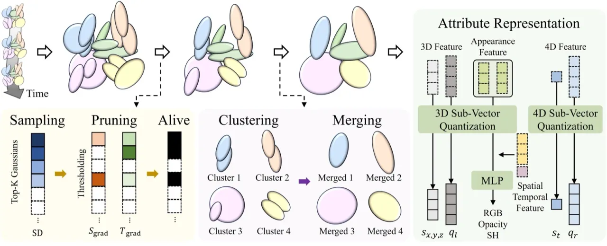
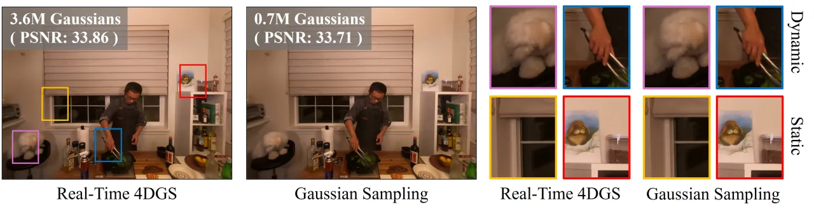
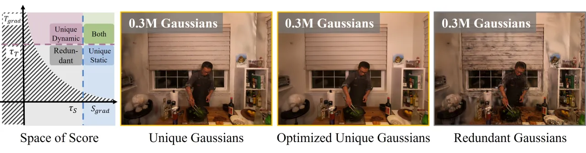
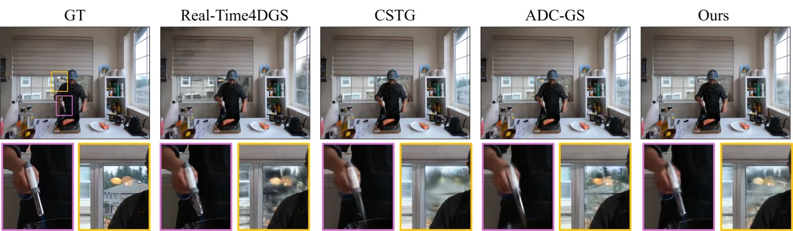

OMG4 提出了一套针对 4D Gaussian Splatting 的渐进式压缩框架，通过 Gaussian Sampling、Gaussian Pruning、Gaussian Merging 与 Attribute Compression 四个阶段，将动态场景模型的存储开销降低三个数量级，同时在 N3DV 等标准基准上维持与未压缩基线相当的视觉质量。
4D Gaussian Splatting 能够实时渲染复杂的动态场景，但其模型体积极为庞大——以 Real-Time4DGS 为例，单条序列的存储占用高达 2 GB 以上，严重制约了在移动端、VR/AR 及带宽受限场景下的实际部署。现有 4D 压缩方案（如 GIFStream）虽有所改善，但仍需 10 MB 量级，且在质量与体积之间难以兼顾。
"OMG4 significantly outperforms recent state-of-the-art methods, reducing model sizes by over 60% while maintaining reconstruction quality."

OMG4 采用四阶段渐进压缩流程：首先通过 SD-Score 筛选关键 Gaussian（Sampling），再剔除冗余点（Pruning），随后合并相似点（Merging），最后对属性进行量化编码（Attribute Compression）。每个阶段之间均插入优化步骤，确保损失信息的充分恢复。

针对 4D 场景的时空双重特性，OMG4 设计了 Static-Dynamic Score（SD-Score）：
SD(i) = S_grad(i) · T_grad(i)，仅保留约 20% 的原始 Gaussian 用于后续处理。
在采样子集上进行进一步精简：对 S_grad 和 T_grad 同时设置 p-分位数阈值 τ_S 和 τ_T，保留满足"至少一个维度高于阈值"条件的 Gaussian：
P_GP = {G_i ∈ P_GS | (S_grad(i) ≥ τ_S) ∨ (T_grad(i) ≥ τ_T)}
这一"OR"逻辑确保静态或动态显著的 Gaussian 均不被误剪。

对剩余 Gaussian 在时空网格中进行聚类，利用空间邻近性与外观相似性计算相似分数，将相似度高的点通过可学习的权重进行融合。该过程以渐进方式重复（网格尺寸递增），逐步减少 Gaussian 总数。
将 OMG（3D GS 压缩方法）中的 Sub-Vector Quantization（SVQ）扩展至 4D：采用 MLP 对时间条件下的外观与不透明度进行隐式建模，属性向量被切分为多个子向量分别量化；压缩分两阶段进行（先 3D 属性，再 4D 属性），确保优化稳定性。
在 N3DV（Neural 3D Video，多视角动态场景）和 MPEG（Bartender，复杂运动场景）两个标准数据集上与当前最优方法进行对比。指标包括 PSNR、SSIM、LPIPS 和存储大小（MB）。
| 方法 | PSNR (dB) ↑ | SSIM ↑ | LPIPS ↓ | 存储 (MB) ↓ | FPS ↑ |
|---|---|---|---|---|---|
| Real-Time4DGS | 31.96 | 0.946 | 0.051 | 2087 | — |
| GIFStream | 31.75 | 0.938 | 0.051 | 10.0 | — |
| OMG4-L（本文） | 31.99 | 0.943 | 0.056 | 5.75 | — |
| OMG4-M（本文） | 31.80 | 0.941 | 0.059 | 3.61 | 246 |
| OMG4-S（本文） | 31.60 | 0.939 | 0.064 | 2.54 | — |
| OMG4-T（本文） | 31.47 | 0.937 | 0.067 | 2.09 | — |
| 方法 | PSNR (dB) ↑ | SSIM ↑ | LPIPS(VGG) ↓ | 存储 (MB) ↓ |
|---|---|---|---|---|
| Real-Time4DGS | 32.44 | 0.895 | 0.1579 | 1630 |
| GIFStream-L | 31.94 | 0.879 | 0.190 | 5.3 |
| OMG4-L（本文） | 32.19 | 0.892 | 0.175 | 6.33 |
| OMG4-S（本文） | 31.91 | 0.887 | 0.190 | 4.00 |
| 配置 | PSNR (dB) ↑ | SSIM ↑ | LPIPS ↓ | 存储 (MB) ↓ |
|---|---|---|---|---|
| FTGS-L（原始） | 32.80 | 0.9579 | 0.0398 | 61.04 |
| OMG4 (FTGS-L) | 32.62 | 0.9562 | 0.0411 | 5.60 |
| OMG4 (FTGS-S) | 32.22 | 0.9516 | 0.0491 | 1.92 |
OMG4 应用于 FreeTimeGS 后，存储从 61.04 MB 降至 5.60 MB，实现约 90% 的压缩率，验证了方法的泛化能力。

在 N3DV 数据集上逐步添加各组件的对比结果如下：
| 配置 | PSNR (dB) ↑ | SSIM ↑ | LPIPS ↓ | Gaussian 数量 | 存储 (MB) ↓ |
|---|---|---|---|---|---|
| Baseline（仅 GS） | 32.07 | 0.9454 | 0.0518 | 679,502 | 13.26 |
| GS + GP | 31.89 | 0.9429 | 0.0559 | 235,027 | 4.83 |
| GS + GP + GM | 31.68 | 0.9407 | 0.0606 | 171,214 | 3.61 |
| GS + GP + GM + AC（完整） | 31.80 | 0.9414 | 0.0594 | 171,136 | 3.61 |
属性压缩（AC）在不增加存储的前提下，将 PSNR 从 31.68 dB 提升至 31.80 dB（+0.12 dB），验证了 MLP 隐式外观建模的有效性。同时，Sampling 与 Pruning 的分离设计（而非联合优化）是取得最佳结果的关键。
OMG4-M 在 N3DV（1352×1014）上的 PSNR 为 31.80 dB，略低于未压缩基线 Real-Time4DGS 的 31.96 dB（-0.16 dB），SSIM 从 0.946 下降至 0.941，LPIPS 从 0.051 上升至 0.059。在对视觉保真度要求极高的应用场景中，这一差距可能不可忽视。
OMG4 包含四个串行压缩阶段，且每个阶段之间均需额外的微调优化。相较于端到端方法，整体训练时间和超参数调优复杂度较高，在实际工程应用中可能增加部署难度。
大部分核心实验以 Real-Time4DGS 为压缩对象。FreeTimeGS 的泛化实验虽有涉及，但未对更多 4D GS 变体（如基于变形场的方法）进行系统性评估，方法的普适性有待进一步验证。
最小配置 OMG4-T 在 N3DV（1352×1014）上 PSNR 降至 31.47 dB，存储仅 2.09 MB。虽实现了更高压缩比，但质量下降已较为明显，极低码率场景的率失真性能有进一步优化空间。